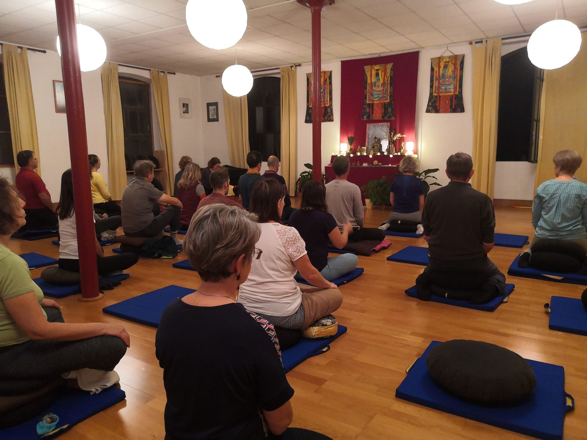
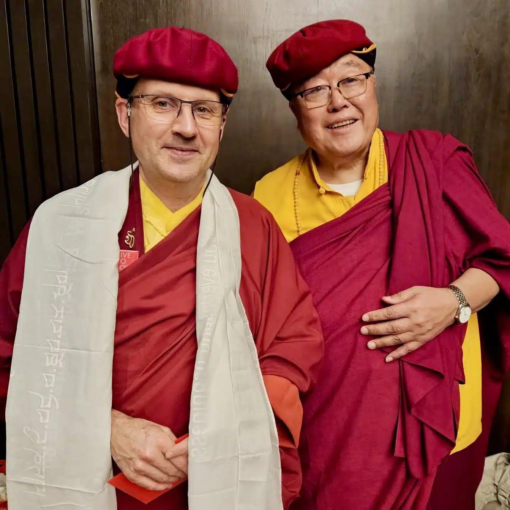

La méditation au cœur de notre pratique
Chaque session est un espace de silence et de présence. Nous pratiquons la méditation silencieuse, le Soutra du Cœur, les visualisations et la récitation de mantras — accessibles à tous, débutants comme pratiquants expérimentés.
Lopön Thrinlé Tenzin, notre président, vient à Grenoble chaque trimestre pour guider nos pratiques et transmettre les enseignements du Dharma. Il assure également la traduction lors des venues de Drubpön Ngawang Tenzin, représentant de la lignée Drukpa en Europe, rendant ainsi ses enseignements accessibles à tous.
Centre d'Études Bouddhiques — Grenoble


Une transmission vivante du Dharma
La lignée Drukpa est portée à Grenoble par deux maîtres qualifiés qui guident et transmettent les enseignements dans leur profondeur et leur authenticité.
Chaque trimestre, leur présence offre à nos membres un contact direct avec la tradition tibétaine vivante — méditations guidées, enseignements du Dharma, accessibles à tous.
Méditation
Sessions de méditation silencieuse, pratique du Soutra du Cœur, ouvertes à tous.
Enseignements
Visualisations, exercices respiratoires, récitations de mantras avec nos maîtres.
Retraites & nature
Journées méditatives en Belledonne, Chartreuse et retraites en lien avec Drukpa Plouray.
Dialogue interreligieux
Colloques au Centre Théologique de Meylan et voyages interreligieux (Rome 2025, Montchardon 2026).
Ateliers culturels
Cuisine, calligraphie, poésie, musique et balades méditatives — le bouddhisme vivant.
Live to Love
Actions altruistes bimensuelles portées par Cécile Dupart dans l'esprit du mouvement humanitaire.


Vous souhaitez participer à nos activités ou en savoir plus ?
Nous contacter